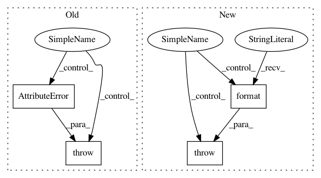

15b3563c3c7f700ee0bf23b0477527dfa5323cea,gpytorch/module.py,Module,initialize,#Module#,46
Before Change
raise AttributeError("Parameter %s exceeds lower bound" % name)
upper_mask = param.data > upper_bound
if upper_mask.view(-1).sum():
raise AttributeError("Parameter %s exceeds upper bound" % name)
return self
def named_parameter_bounds(self):
After Change
if prior is not None:
param = self._parameters[name]
if not prior.is_in_support(param):
raise ValueError(
"Value of parameter {param} not contained in support " "of specified prior".format(param=param)
)
return self
def named_parameter_priors(self):
In pattern: SUPERPATTERN
Frequency: 3
Non-data size: 4
Instances
Project Name: cornellius-gp/gpytorch
Commit Name: 15b3563c3c7f700ee0bf23b0477527dfa5323cea
Time: 2018-06-07
Author: balandat@fb.com
File Name: gpytorch/module.py
Class Name: Module
Method Name: initialize
Project Name: epfl-lts2/pygsp
Commit Name: 012b8d1184db5c912d0bc4d84afe2ad81b21a8d8
Time: 2017-08-17
Author: michael.defferrard@epfl.ch
File Name: pygsp/graphs/graph.py
Class Name: Graph
Method Name: create_laplacian
Project Name: pymanopt/pymanopt
Commit Name: eb34c629ef451f35e65e991947591a73481f01c3
Time: 2020-02-01
Author: niklas.koep@gmail.com
File Name: pymanopt/core/problem.py
Class Name: Problem
Method Name: __setattr__